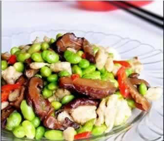
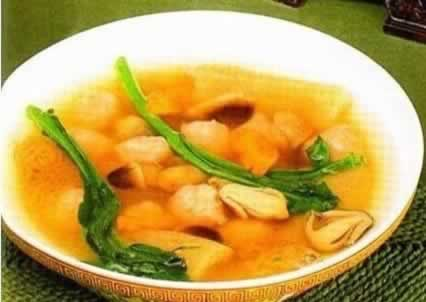

准妈妈吃蔬菜有讲究吗？
蔬菜是准妈妈饮食中必不可少的食物，在膳食中占有很大比例，蔬菜中的蛋白质和脂肪含量较低，含有一定量的碳水化合物以及丰富的无机盐类（钙、钾、钠、镁等）和某些维生素（如维生素C和胡萝卜素等）。可是，蔬菜中的营养素容易流失，准妈妈们要如何保留蔬菜中的营养素呢？这就要在保存、清洗、切法、烹煮上掌握一些技巧了。
刚买回来的蔬菜，千万不要着急放进冰箱，洗净后用保鲜袋装好后，在保鲜袋上扎一些小孔后，再放进冰箱冷藏室，待烹调时直接取出就好。而洗菜时不宜将蔬菜在水中浸泡过久，冲洗后一般不建议浸泡超过半小时，否则将会丢失部分营养素。在清洗蔬菜时，尽量少丢弃外层的叶茎，因为越靠近外皮的部分，营养也越为丰富；菜色越绿的蔬菜一般所含维生素C与维生素A也越多。
一些蔬菜（例长豆角）如需在烹饪前煮熟，建议尽量将整棵煮熟后再切；若必须先切后煮（例菜花），也要等到煮之前再来切，以免维生素提前被破坏。许多能生吃的蔬菜如黄瓜、西红柿等，尽量生吃保持原味与营养；要炒的菜要待油热后再下锅，用猛火烹炒，以缩短烹调的时间，这样更能保持蔬菜原有的色泽与营养价值。
最后，不建议准妈妈们吃“隔夜菜”，因为蔬菜中的硝酸盐是可能转化成亚硝酸盐的，亚硝酸盐是一种致癌物质，对准妈妈和胎宝宝都有一定危害，而现做现吃最为健康。
本周推荐尝试食谱1：
毛豆鸡丁
推荐理由：本菜清香美味，毛豆含有丰富的植物蛋白、多种有益的矿物质、维生素及膳食纤维。
食谱原料：
肉桂4.5克，人参9克，白术4.5克，干姜1.5克，熟地6克，去荚毛豆1杯．鸡胸肉150克，菜椒1只、淀粉、香油、精盐各适量。
制作方法：
1、把姜、人参、白术、熟地分别洗净，放锅内加2杯水。大火煮沸后改小火煮约1 5分钟，加入肉桂，煮约2分钟，将汤汁滤出；
2、鸡肉切丁，加入1汤匙药材汁及淀粉拌匀。毛豆入锅焯烫2分钟，放入冷水中冲凉，沥水。菜椒洗净切成小片。
3、油倒锅内烧热，放入鸡丁炒至八成熟。毛豆入锅，淋上药材汤汁，焖煮约5分钟，加莱椒、精盐翻炒，淋香油即成。
本周推荐尝试食谱2：
木耳青菜豆腐虾丸汤
推荐理由：虾肉肉质松软易消化，豆腐蛋白含有人体必需的八种氨基酸，本汤适合准妈妈在孕期食用。
食谱原料：
虾仁200克，北豆腐150克，猪肉100克，干木耳30克，空心菜180克，鸡蛋清30克，黄豆粉15克，盐、香油适量。
制作方法：
1、把虾剥壳去肠，洗净沥干，豆腐搅碎，猪肉煮熟切碎；空心菜洗净去叶后焯一下，木耳泡发后洗净去蒂备用；
2、虾仁和猪肉放在碗内，加少许盐、麻油、蛋白和豆粉一起搅匀后，用手把虾仁猪肉碎挤捏成丸子，放水中煮熟；
3、起锅把水煮开，放入丸子，空心菜和木耳，再滚片刻，然后用酒和盐调味即可。